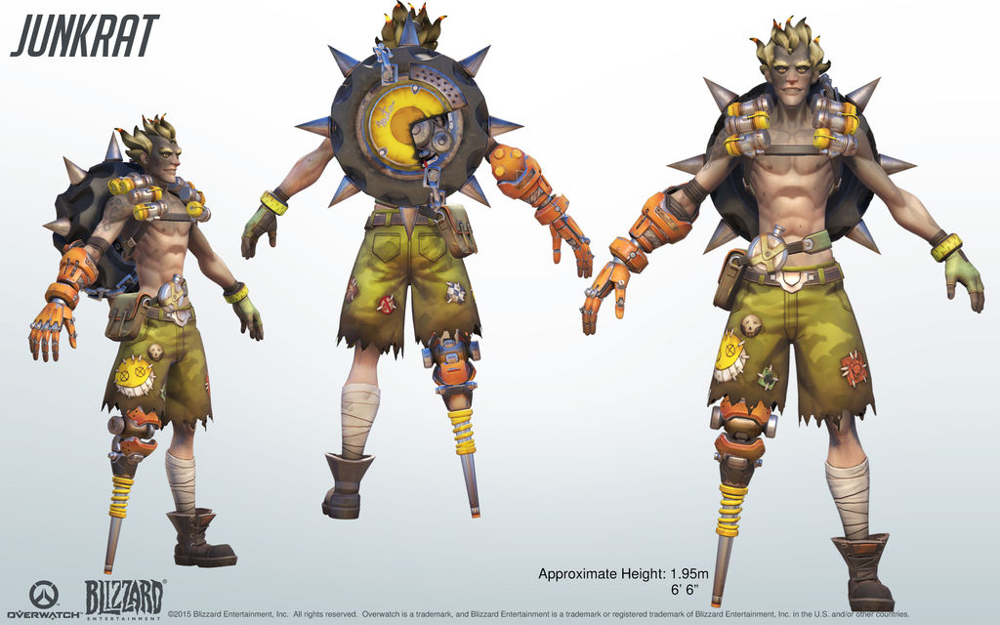
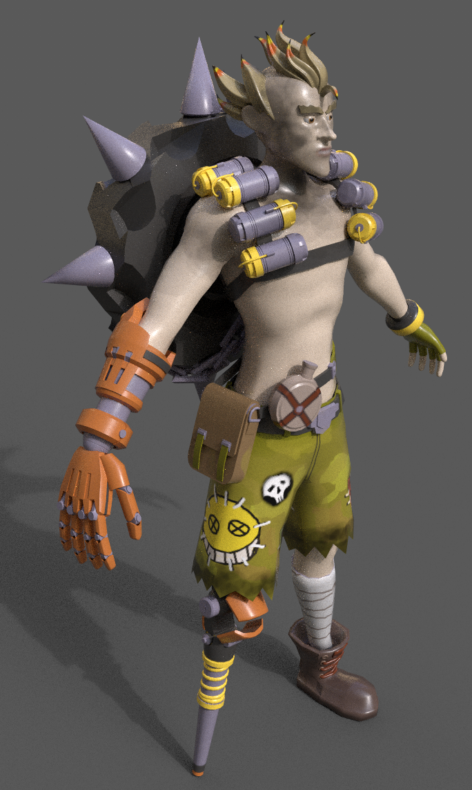
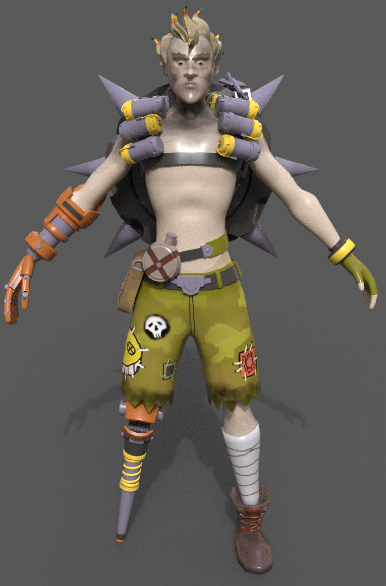
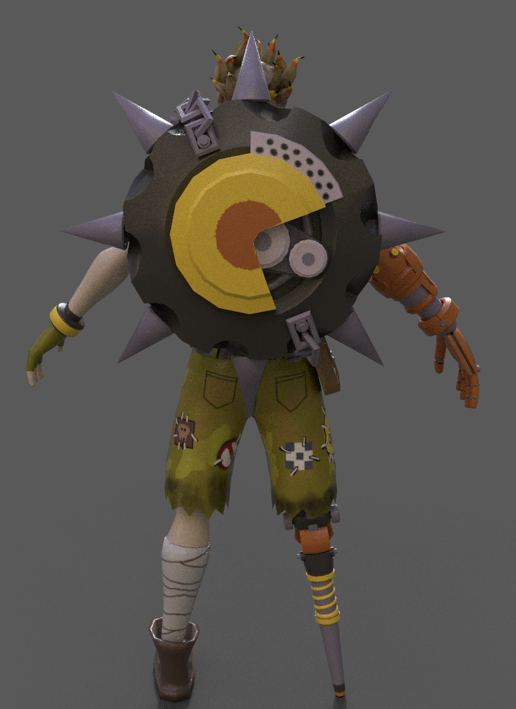
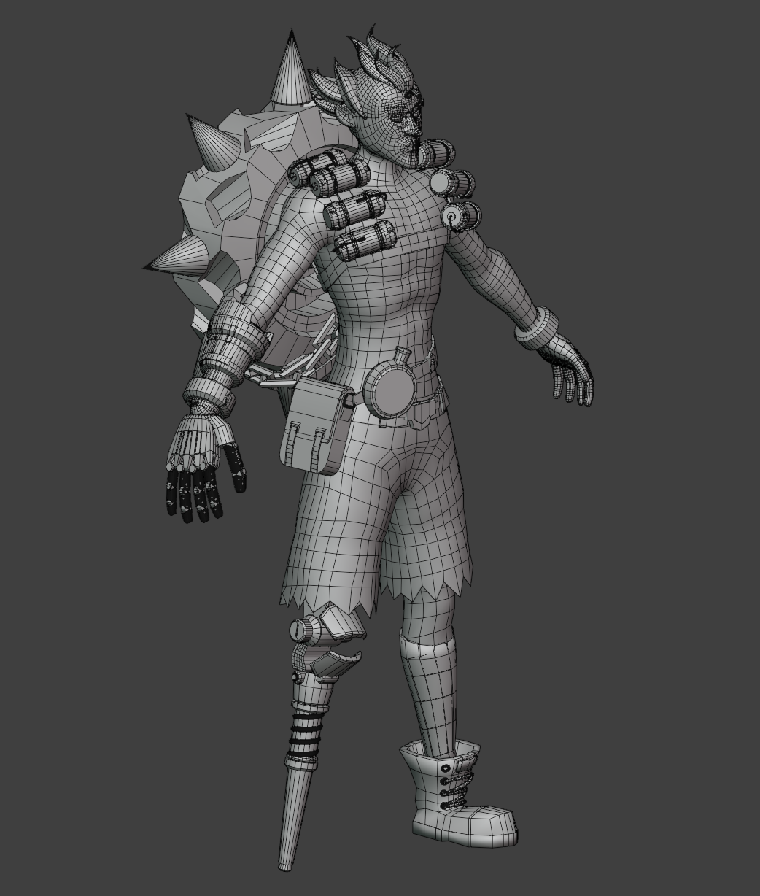
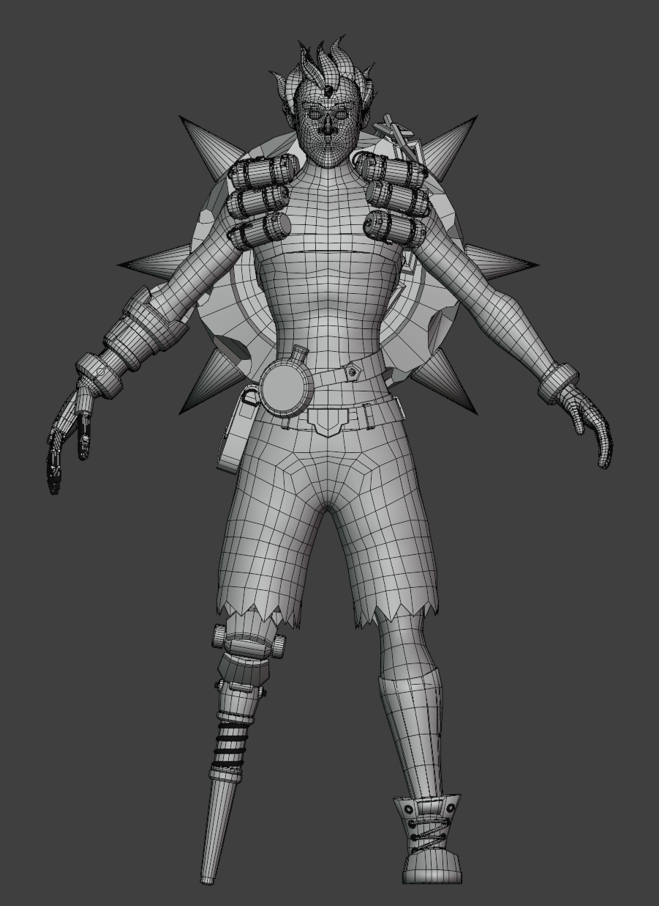
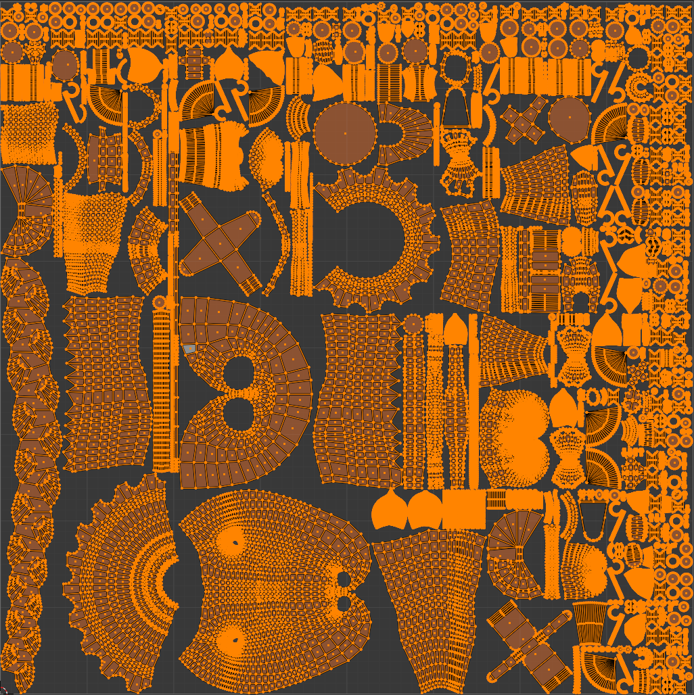

Junkrat Model
Role: Sole Creator
Based on: Junkrat from Overwatch 2016 | 79,000 Triangles
About
This model was created as a project for my intro to modeling class. It is based off of the attached image. The goal was to use any concept art to model a 3D version of a character. An important part of the assignment was proper retopology and minimal polygons. Texturing was also part of the assignment, however only base colors were allowed and no other parameters or special textures







